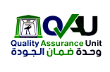

Aboukir Higher Institutes

About the institute
The Higher Institute for Computer and Information Systems - Abu Qir - Alexandria was established by Ministerial Resolution No. 1434 of 2000, and work began in the institute in the academic year 2000/2001, and the institute’s internal regulations were approved by Ministerial Resolution No. 732 of 2004, and the bachelor’s degree was equivalent. It is granted by the Institute by the Supreme Council of Universities by Ministerial Resolution No. 5585 of 2006, and the equation has been renewed by Resolution of the Supreme Council of Universities No. 555 of 2009.
The institute works on graduating cadres of trained workers theoretically and practically to match the requirements of the labor market. Our mission is to graduate distinguished technical cadres in the field of information systems, commercial and accounting fields in accordance with international standards through a comprehensive basic knowledge of practical skills, business management, communication and communication

in order to provide the graduate with the ingredients and mechanisms for success in the world. Professionalism and conducting scientific research in technical, administrative and cognitive fields while building an effective community partnership with the local, Arab and international business environment.
The institute provides continuing education services and community service programs to support professional development, enrich personal knowledge, lifelong learning, provide community service programs to support the economy, workforce, and community development, and exploit innovations and technological developments to increase the institution’s competitiveness in the market and manage information, systems and software projects.
Institute goals:
Dean's word
My sons and daughters
Students of the Higher Institute of Computer and Information Systems in Abu Qir
Happy New Year on the occasion of the start of the new academic year and your joining the ranks of the students of the Higher Institute for Computer and Information Systems in Abu Qir, where the Institute welcomes you while you take your first steps in the university education stage, and you have achieved dear hope and excellence with your diligence and perseverance ..
I tell you that you have made a good choice, and I hope that you will achieve everything you wish. The institute and its faculty members are proud of your joining the institute and they wish you success and success, God willing.
A new year full of optimism and hope for a bright tomorrow of your own making. The institute will contribute with you to the establishment of a scientific and technological renaissance in our beloved Egypt, as the institute is the beginning of your path to life.
My sons, the students ... I invite you to be diligent, diligent, respect the sanctity of the campus and participate fruitfully in scientific and student activities.
I also remind my new children that we are your guardians inside the institute's campus. The doors of our offices are open to you at any time and are ready to hear your opinions and observations and take them into consideration, God willing.
With my sincere best wishes for success

Quality Assurance Unit
About the unit
The Quality Assurance Unit was established in the Board of Directors session that was held on Saturday, March 28, 2015. The Quality Assurance Unit succeeded in adopting the academic reference standards in April of 2017 and the academic reference standards contain four basic axes upon which the student is graduated, namely:
Dr. Ibrahim Harfoush, a member of the institute’s faculty, has been appointed as the director of the unit and assigned to contact the National Authority for Quality Assurance and Accreditation in Cairo to complete the accreditation procedures. A selected group of faculty and assisting staff is working in the Quality Assurance Unit, in addition to a select group of the apparatus. The administrator of the institute.
Vision
Upgrading the position of the Higher Institute for Computer and Information Systems at the national and regional level, contributing to achieving comprehensive quality and high level of performance, and maintaining the continuous improvement of the educational process outputs and community service.
the message
The Quality Assurance Unit seeks to spread the culture of quality, and to follow-up and evaluate performance in all elements of the educational system and service activities provided by the institute, in light of the standards of the National Authority for Quality Assurance of Education and Accreditation, and the unit adopts the process of continuous improvement of institutional and academic performance, to raise the level of Efficiency and competitiveness of graduates to gain the confidence and satisfaction of the beneficiaries, and to achieve comprehensive quality.
Committees for implementing and following up the activities of the Quality Assurance Unit:
Certifications and accreditation
The duration of study at the institute is four years, as the Supreme Council of Universities’s decision includes granting the institute’s graduates the degree of Bachelor of Commerce, Department of Business Administration, Division of Management Information Systems (in Arabic / in English), equivalent to the degree of Bachelor of Commerce awarded by Egyptian universities. And a certificate approved by the Ministry of Higher Education and an equivalent from the Supreme Council of Universities. By the decision of the equivalence, the institute’s graduates are entitled to be registered with the Merchant Syndicate, to register higher studies in Egyptian and foreign universities, and to apply to military colleges for specialized officers.
Conditions for admission to the institute
Division of Management Information Systems in Arabic
Where does a management information systems graduate work?
The educational program is designed to provide students with a full understanding of the design and analysis of systems, communication, programming, databases and all concepts of business administration, and to provide the necessary skills to integrate important information with all operations in the facility, and the ability to re-engineer operations and business, and the graduate can work in the field of management information systems Business analysis, project management and data management in all types of establishments in e-commerce and the international economy, where there is an increasing need for specialists in the field of management information systems, especially with the growing dependence of establishments on information technology and one of the most important jobs for which we qualify our students